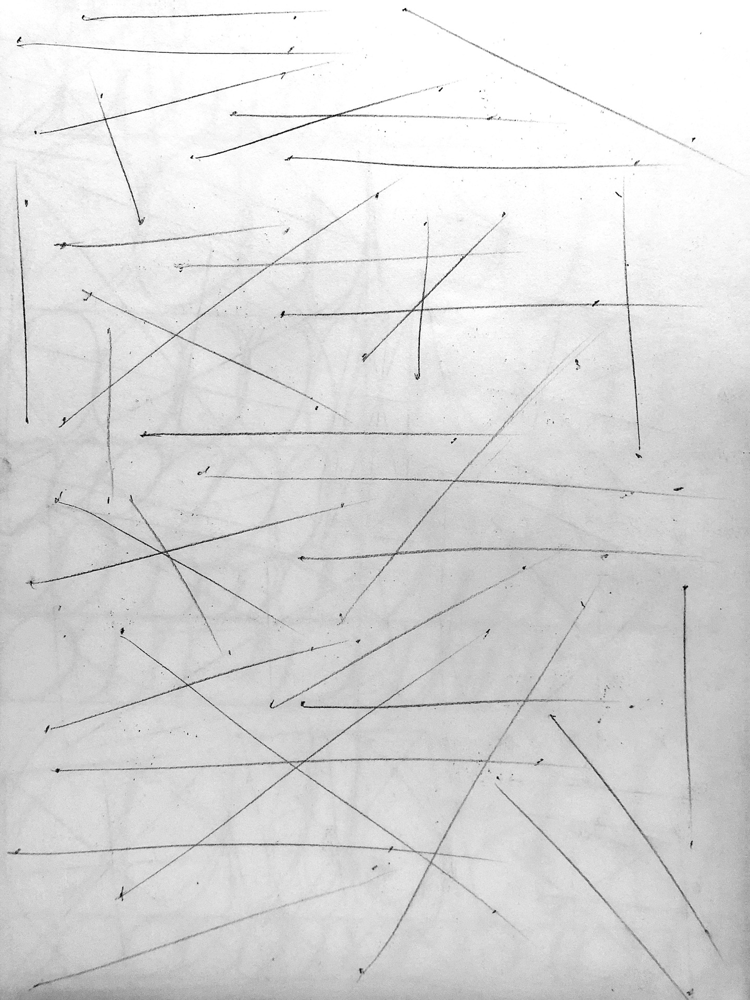
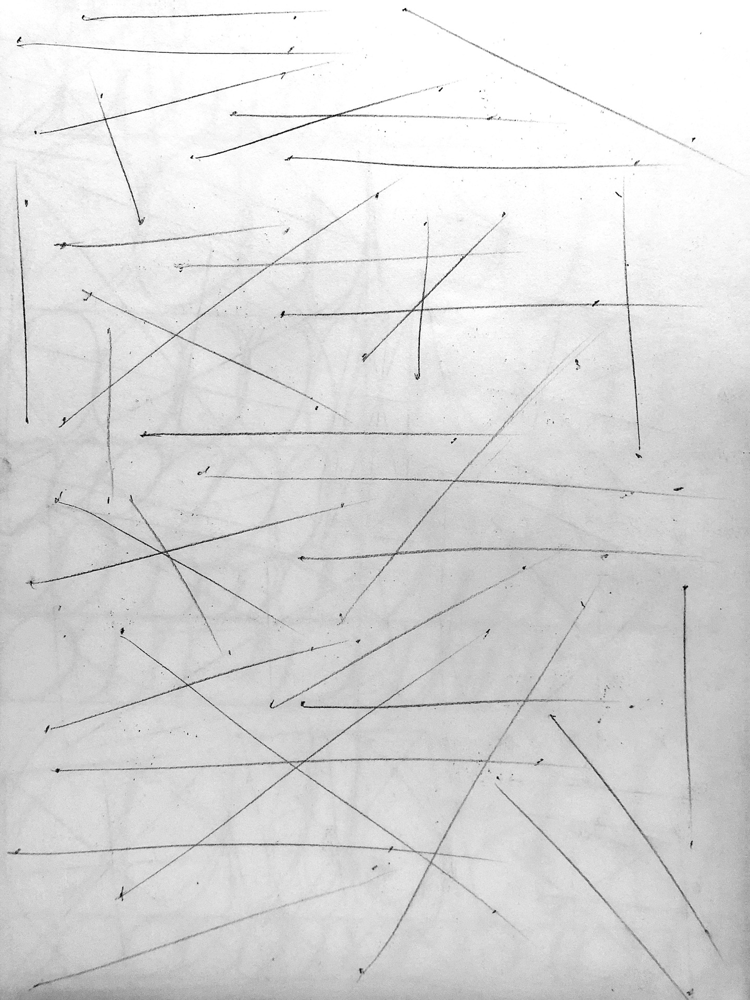

Perspective 1, Week 1
Week of June 27
8h 5m of drawing
This week I entered my deranged artist era, where I draw the same basic forms endlessly (to learn perspective via draw a box
Monday
 

Tuesday
1h 5m
Realized that I'm a lot better at controlling the bounds of these shapes then last time I attempted draw a box. Glad to see that figure drawing and head anatomy has improved my line accuracy.
Drawing ellipses feels meditative.
Friday
Saturday
2h 0m
Boxes have a lot of room for improvement, but I'm happy that I'm able to draw from the shoulder and get their convergences to all lie within fairly small bounds. Wasn't able to do this at all a month ago.
Sunday
2h 45m
Drawing rotated boxes made how vanishing points imply orientation finally click for me.